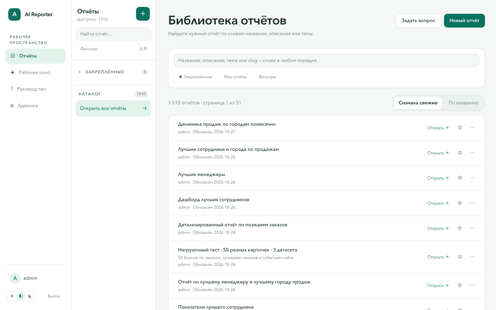
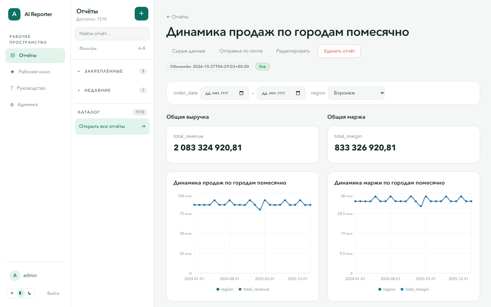
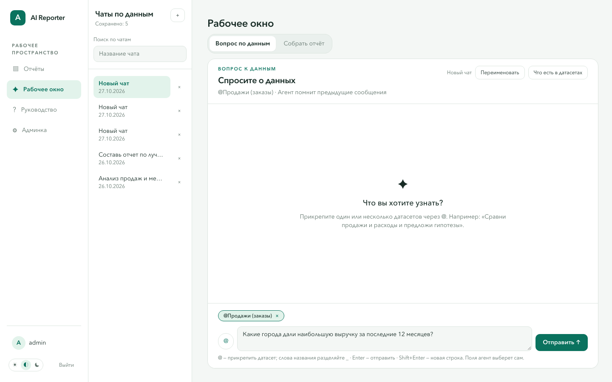
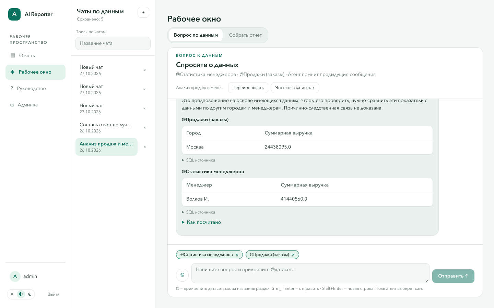
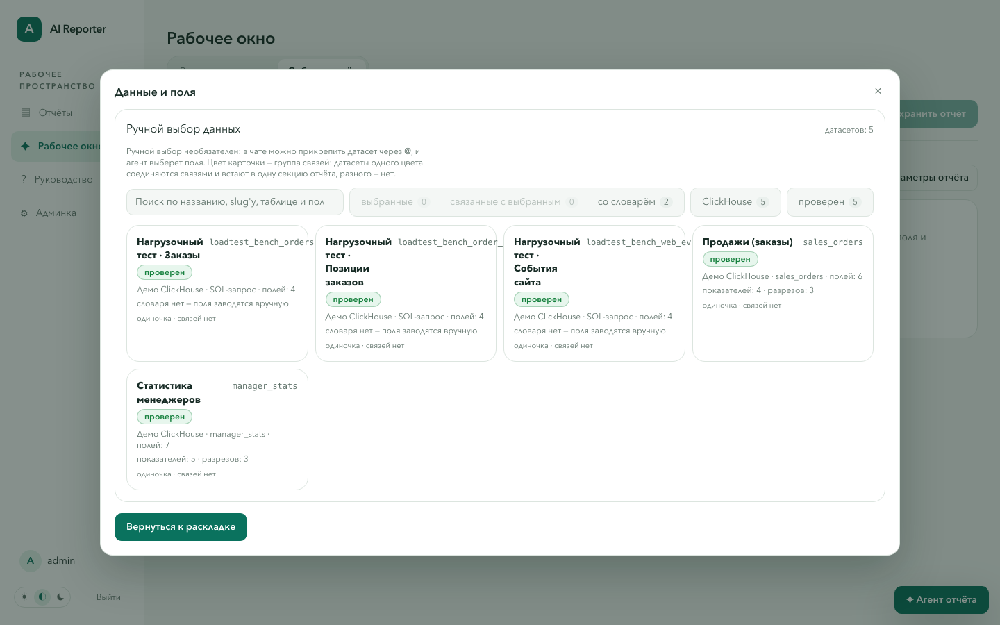
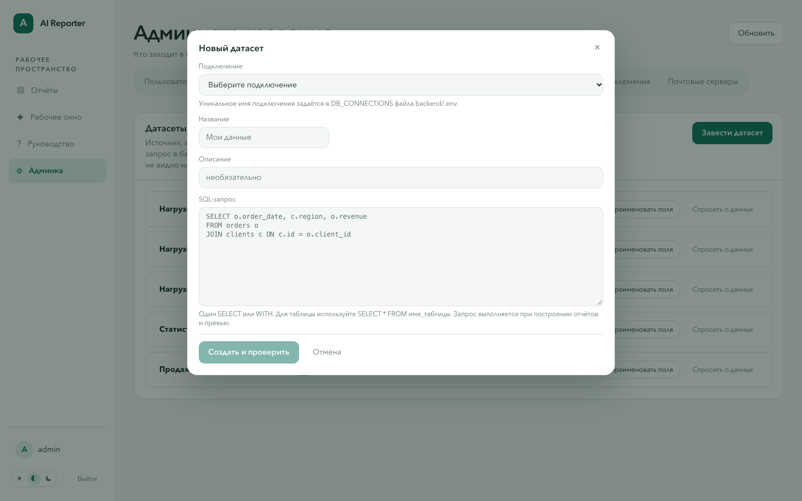
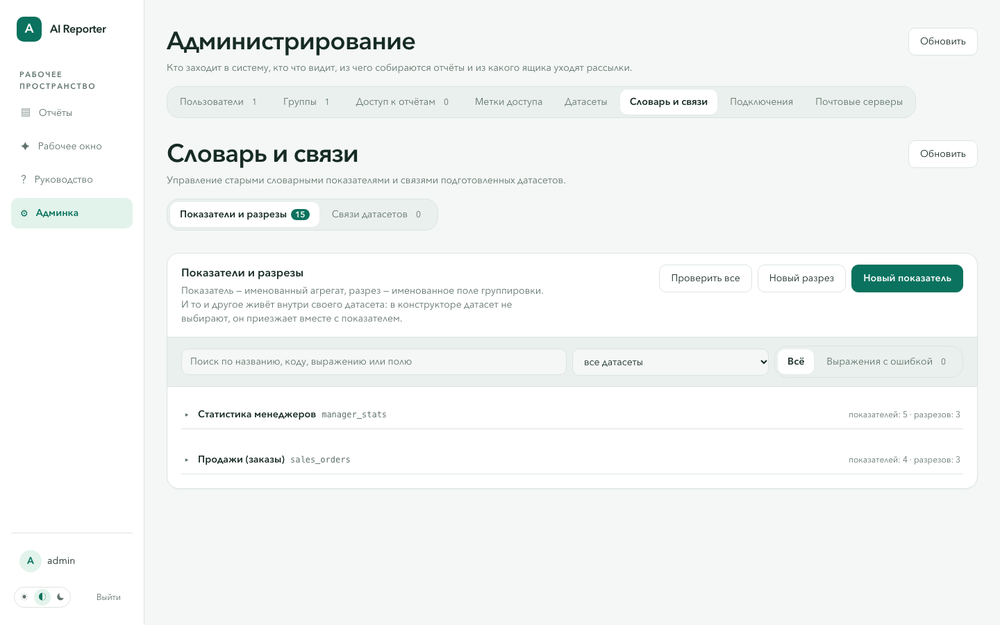
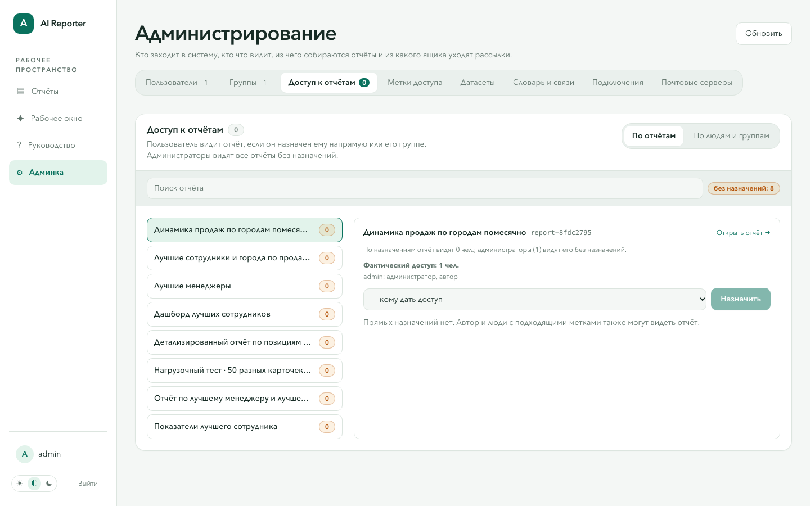
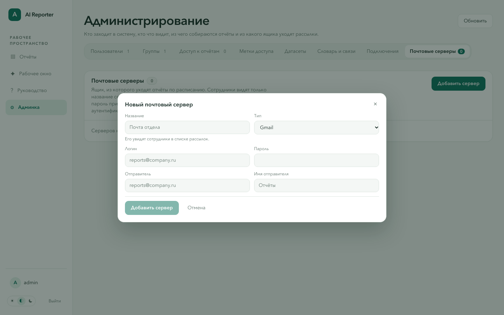

AI Reporter
от вопроса
к отчёту
Практические сценарии для сотрудника и администратора. Навигация, данные, отчёты, доступ и рассылки.
Листайте стрелками ← → или кнопками под слайдом · версия по текущему интерфейсу
Две роли, одно рабочее пространство
Пользователь изучает данные и собирает отчёты. Администратор готовит источники и управляет доступом.
Пользователь
- Библиотека отчётов и просмотр живых данных
- Вопросы по данным и сохранённые чаты
- Конструктор отчётов, детализация, Excel
- Личный кабинет, рассылки, пароль
Администратор
- Всё, что доступно пользователю
- Подключения, датасеты, словарь и связи
- Пользователи, группы, назначения и метки
- Почтовые серверы и контроль рассылок
Работа
пользователя
Найти отчёт, проверить число, задать вопрос, собрать новый отчёт и получать его по расписанию.
01Начните с библиотеки отчётов
После входа по логину и паролю открывается каталог. «Рабочее окно» объединяет вопросы по данным и создание отчёта.
Найдите нужный отчёт
Поиск учитывает название, описание, тему и адрес отчёта. Выдача разбита на страницы.
Поиск доступен в библиотеке и в левом каталоге.
Группа доступа, автор, тема, статус и закреплённые отчёты.
Сначала свежие или по названию. Закрепите важный отчёт звездой.
Пример: найти динамику продаж

Действия
- Введите «Динамика продаж» в строку поиска.
- При необходимости включите «Сначала свежие» или фильтр по теме.
- Откройте найденный отчёт из списка.
Читайте отчёт по живым данным
При открытии система пересчитывает данные источника. Отчёт может содержать KPI, графики и таблицы.
Что делать на странице
- Выбрать значения фильтров, включая период дат
- Сравнить KPI, графики и таблицы
- Открыть пояснение и дату обновления
- При наличии прав — изменить название или определение
Фильтры
Выбор читателя пересчитывает секции отчёта.
Доступность фильтров зависит от сохранённого определения отчёта.
Пример: сравнить продажи по городам

Действия
- Выберите регион в фильтре над отчётом.
- Сравните выручку и маржу.
- Нажмите точку графика или «Сырые данные», чтобы проверить строки.
От числа — к исходным строкам
Если в отчёте включена детализация, откройте строки под точкой графика, ячейкой или показателем.
Создайте чат кнопкой «+»
В «Рабочем окне» выберите «Вопрос по данным». Новый чат сразу сохраняется и появляется слева.
Список чатов находится в левой панели.
Чат можно переименовать, найти по названию и открыть после перезагрузки.
Кнопка × рядом с чатом удаляет его после подтверждения.
Прикрепите датасет через @
Агент отвечает по выбранным источникам. Можно прикрепить несколько датасетов и сравнить их, если периоды и ключи сопоставимы.
Как выбрать
- Нажмите кнопку @ или напечатайте @ в поле вопроса
- Введите название датасета; между словами используйте _
- Выберите вариант стрелками и Enter или мышью
- Снимите прикрепление крестиком рядом с названием
Пример вопроса
«Какие товары продавались чаще всего по месяцам в @sales_orders?»
Пример: вопрос о выручке

Действия
- Нажмите + для нового чата.
- Прикрепите датасет «Продажи (заказы)» через @.
- Спросите: «Какие города дали наибольшую выручку за последние 12 месяцев?»
Проверьте, как получен ответ
Агент показывает ход работы, текст ответа, таблицу и объяснение расчёта.
Ответ
- Текст поступает постепенно
- Можно задать уточнение в том же чате
- Гипотезы отмечаются отдельно от фактов
Доказательства
- Таблица фактических строк
- «Как посчитано» раскрывает расчёт, группировку и фильтры
SQL
- Логический SQL раскрывается по нажатию
- Внутренний SQL источника скрыт от обычного пользователя
Пример: сравнить два источника

Что проверить
- Сравните текст ответа с таблицами под каждым датасетом.
- Раскройте «Как посчитано» и логический SQL.
- Если вывод — предположение, проверьте его другим периодом или источником.
Опишите будущий отчёт словами
В «Рабочем окне» переключитесь на «Собрать отчёт» и откройте чат агента.
Агент видит поля и словарь выбранных источников.
Например: «Выручка и число заказов по городам, топ-15».
Поля и секции появляются в раскладке; попросите изменить её следующей репликой.
Перед сохранением
Посмотрите предпросмотр по реальным данным и уточните фильтры.
Кнопка «Словарь полей» показывает, какие показатели и разрезы можно назвать словами.
Соберите отчёт вручную
Кнопка «Данные и поля» открывает выбор источников, показателей и разрезов.
Датасеты
- Ищите по названию, описанию, таблице и полям
- Фильтруйте по источнику, серверу, статусу и связям
- Выбранные датасеты видны отдельно
Поля
- Показатель — что считать
- Разрез — по чему группировать
- Можно взять поле колонки напрямую
Формулы
- Выберите два показателя и действие: +, −, ×, ÷
- Задайте формат: число, деньги или процент
- Вернитесь к раскладке
Разместите KPI, графики и таблицы
Секции можно добавлять, переставлять, менять по типу и ширине. Для каждой секции выбираются показатели и разрезы.
Раскладка
- KPI показывает одно или несколько ключевых чисел
- График показывает изменение или сравнение
- Таблица выводит строки и группировки
- Для дат и времени задайте шаг; для таблиц — порядок и число строк
Предпросмотр
Смотрите итог до сохранения.
Ошибка расчёта показывается рядом с предпросмотром, чтобы можно было поправить раскладку.
Пример: добавить поля в раскладку

Действия
- Откройте «Данные и поля».
- Выберите «Продажи (заказы)» и показатели выручки.
- Добавьте разрез «Город», затем вернитесь к раскладке и вставьте график.
Добавьте фильтры и сохраните
Фильтры задают выбор, который увидит читатель отчёта. По датам используется выбор периода.
Отправляйте отчёт по расписанию
На странице отчёта нажмите «Отправка по почте». Все свои рассылки собраны в личном кабинете.
Настройка
- Укажите получателей через запятую
- Выберите формат Excel или PDF
- Задайте разовую, ежедневную, еженедельную или ежемесячную отправку
- При нескольких серверах выберите отправителя
Управление
- Изменить параметры
- Отправить сейчас
- Включить или выключить
- Удалить рассылку
Мои отчёты, рассылки и пароль
Разделы кабинета доступны отдельными вкладками; выбранная вкладка остаётся в адресе.
Мои отчёты
- Поиск по доступным отчётам
- Переход к просмотру
- Создание рассылки по отчёту
Мои рассылки
- Поиск по отчёту и получателю
- Состояние и ближайшая отправка
- Управление расписанием
Безопасность
- Просмотр логина и роли
- Смена собственного пароля
- Логин и роль меняет администратор
Один рабочий сценарий
Работа
администратора
Подключить источник, описать данные, выдать доступ и настроить доставку отчётов.
02Восемь вкладок администрирования
Раздел доступен только роли администратора. Каждая вкладка имеет собственный адрес.
Люди и права
- Пользователи
- Группы
- Доступ к отчётам
- Метки доступа
Данные и доставка
- Датасеты
- Словарь и связи
- Подключения
- Почтовые серверы
Настройте подключение к базе
Список подключений в админке показывает доступные источники и позволяет проверить их.
Подключения определяются в backend/.env, а не создаются из формы.
После изменения конфигурации список обновится.
Проверьте доступность каждого подключения.
Поддерживаемые источники
PostgreSQL
ClickHouse
Oracle
CSV
CSV хранится как файл датасета; подключение к БД для него не требуется.
Заведите датасет для команды
Датасет — именованный источник данных. В форме выбирается подключение, задаются название и SQL-запрос только для чтения.
Пример: подключить продажи

Действия
- Выберите заранее настроенное подключение.
- Назовите датасет «Продажи по городам».
- Укажите SELECT с датой, городом и выручкой; нажмите «Создать и проверить».
Проверьте схему и настройте поля
Карточка датасета объединяет превью, поля, словарь и вопросы по данным.
Проверка
- «Проверить и вычитать схему» обновляет поля и статус
- Превью: первые строки, сортировка и фильтр по колонкам
- Ошибки подключения видны в карточке
Поля
- Переименуйте технические названия
- Назначьте роль: показатель, разрез или игнорировать
- Для показателя задайте агрегирование и формат
Изменение
- Правьте SQL-запрос датасета
- Переносите датасет на другое подключение
- Для CSV загрузите новый файл
- При необходимости удалите датасет
Опишите смысл данных
Общий словарь помогает конструктору и агенту выбрать правильные расчёты.
Показатель
- Название и код
- SQL-агрегат, формат, единица
- Проверка выражения на источнике
Разрез
- Название и поле датасета
- Тип: категория, число или дата
- Описание для пользователей
Связь
- Два датасета и поля соединения
- Тип соединения
- Используется в секциях с несколькими источниками
Пример: объяснить поля продаж

Действия
- Откройте датасет «Продажи (заказы)» в словаре.
- Проверьте показатель «Выручка» и разрез «Город».
- Нажмите «Проверить все», затем соберите тестовый отчёт.
Создайте пользователей
Администратор выдаёт учётные записи, выбирает роль и управляет доступом к приложению.
Карточка пользователя
- Логин и роль: пользователь или администратор
- Поиск в списке пользователей
- Смена или сброс пароля
- Удаление учётной записи
Передача доступа
Временный пароль показывается один раз.
Передайте его сотруднику по согласованному каналу; затем сотрудник меняет пароль в кабинете.
Соберите пользователей в группы
Группа удобно представляет отдел или команду. Доступ к отчёту можно назначить группе сразу.
Например, «Продажи», «Логистика» или «Дирекция».
Список членов меняется прямо в карточке группы.
Участники получат доступ через группу.
Когда меняется команда
Достаточно обновить состав группы.
Не нужно переназначать каждый отчёт сотруднику по отдельности.
Управляйте доступом к отчётам
Доступ может прийти напрямую пользователю, через группу, через совпадающую метку, а также по роли администратора или авторству.
Два режима назначения
- Выберите отчёт → назначьте человека или группу
- Выберите человека или группу → назначьте отчёт
- Панель показывает фактический доступ и его причины
Контроль
- Ищите отчёты без назначений
- Проверяйте доступ через группы
- Снимайте назначения, когда доступ больше не нужен
- Отдельно проверяйте метки отчёта
Пример: выдать доступ группе

Действия
- Выберите отчёт слева.
- В поле «Кому дать доступ» укажите нужную группу.
- Нажмите «Назначить» и проверьте список фактического доступа.
Дайте доступ через метки
Совпадение метки отчёта с разрешённой меткой пользователя или его группы даёт право просмотра.
Настройка
- Выберите пользователя или группу
- Укажите разрешённые метки через запятую
- Сохраните и проверьте доступ к отчёту
На самом отчёте
- Автор и администратор могут менять темы отчёта
- Учитывайте их при поиске и правах
- Метки людей и групп назначает только администратор
Настройте почтовый сервер
Без почтового сервера пользователи не смогут отправлять отчёты по расписанию.
SMTP-параметры, шифрование, логин, пароль и адрес отправителя.
Укажите адрес для тестового письма и проверьте статус.
Сервер по умолчанию используют новые рассылки.
После настройки
Сотрудники выбирают получателей и время; технические параметры остаются у администратора.
Пример: подготовить отправителя

Действия
- Выберите тип почты и задайте название, видимое сотрудникам.
- Введите учётные данные и адрес отправителя.
- Сохраните сервер и отправьте тестовое письмо.
Рекомендуемый порядок настройки
Кто что может делать
| Действие | Пользователь | Администратор |
|---|---|---|
| Смотреть разрешённые отчёты, фильтровать, открывать детализацию | Да | Да, все отчёты |
| Задавать вопросы по датасетам и собирать отчёты | Да | Да |
| Править свой отчёт и свои рассылки | Да | Да |
| Заводить датасеты, словарь, связи, пользователей и группы | Нет | Да |
| Назначать доступ, почтовые серверы и удалять отчёты | Нет | Да |
Если что-то не работает
Пользователю
- Нет отчёта: проверьте поиск и фильтры; попросите администратора проверить права
- Нет датасета: сообщите его название администратору
- Не отправляется почта: проверьте наличие почтового сервера и адреса получателей
Администратору
- Датасет с ошибкой: проверьте подключение, SQL и вычитку схемы
- Не строится отчёт: проверьте словарь, поля и предпросмотр секций
- Не видно отчёт: проверьте назначение, группу и метки
Данные →
проверка →
решение
Начните с готового отчёта или задайте вопрос в рабочем окне. Администратор подготовит источники, доступ и доставку.
Клавиша O — содержание · P — печать или сохранение в PDF · F — полный экран